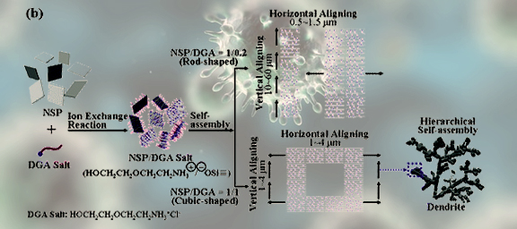

"神奇物理特性"
對於這些細菌與病毒，我們一直沒有一種阻礙他們滋生或複製的有效路徑。
自然界微小的生存強者
生活中所存在的細菌與病毒，是自然界生存的兩大族群。一般而言只知細菌與病毒的可怕，但多數人並不清楚我們每天都會與這些細菌或病毒不斷接觸，甚至傳遞的機率實屬頻繁。我們日常生活中對抗細菌與病毒的方式，長久以來，一直都要等到人體有了危害，才利用藥物或抗生素來對抗細菌及病毒。這是一種被動的方式。當NSP 被研發出來後受到的熱切的關注，它的突破性關鍵因素才會一直被提及。
細菌與病毒的解決之道
既然提到...細菌與病毒的生存方式和它們的複製的關聯路徑，在很多的相關醫學文獻中早已詳細記載。NSP強大的吸附力正是解決這些細菌與病毒最好的對手，底下有很多的證明讓我們一一道來。
我們回顧製作NSP的脫層原理，研究團隊刻意要將它脫層至奈米尺寸的用意就在分子越小，它所能覆蓋的或溶入(深入)的環境就越多。而且，刻意保留高表面積的負電層，目的在於讓NSP能採主動吸附優勢，將細菌與病毒團團包圍，斷開了細胞複製的鏈結。這樣一來，利用NSP來對抗細菌與病毒，可降低人體對抗生素或藥劑的依賴跟危害，讓不好的影響降低到零。就因為這些細菌皆帶有正電，而NSP的尺寸比細菌小，剛好利用最高表面積的負電離子層，以團隊的方式來包覆細菌，主動與細菌產生物理吸附作用，以影響細菌繁殖與吸收養分的來源。當細菌被NSP帶離開了吸取養分的環境，在無法動彈的情況下，細菌彼此的連結被NSP破壞了，自然會停止繼續增生與複製。失去成長的細菌因此萎縮而形成代謝。
而且皮膚佔人體體重約16%，是暴露在外表的最大器官。當我們接觸到病毒時完全不自知。病毒藉由皮膚和我們短兵相接，它也可能循皮膚再接觸口鼻，而進入體內後感染及破壞細胞。
病毒進入到人體後所造成的危害通常較大，雖說人體白血球會與其對抗，但因為它除了破壞我們的細胞之外，也會產生分裂出新的變體，或組成新病毒物種。人體成為它的宿主，形成下一病毒帶原或繁衍的溫床，引發的病變再形成下一波傳染源(腸道型病毒即是一例)。